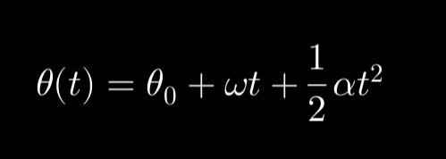

Proyecto del Curso de Física 1
Booklet Educativo 
MEDICIONES
Concepto
La medición es el proceso mediante el cual se asigna un número a una propiedad física de un objeto o fenómeno, en comparación con una unidad previamente definida. Las mediciones permiten cuantificar los fenómenos naturales.

Fórmulas
Error Absoluto
Δx = |xi - xreal|
Error Relativo
Er = (Δx/xreal) × 100%
Error Porcentual
Ep = |(xexp - xteórico)/xteórico| × 100%
Propagación de Errores
Suma/Resta: Δ(A±B) = ΔA + ΔB
Multiplicación: Er(A×B) = Er(A) + Er(B)
Potencia: Er(An) = n·Er(A)
Video de Ejemplo
Explicación por Adrián Pedraza en su canal de Youtube - El Traductor de Ingeniería. En el tambíen muestra un fragmento de la explicación por parte de la Licda. María Inés Baragatti.
Ejercicio Propuesto
Se mide una mesa y se obtiene un valor de 1.98m, siendo el valor real 2.00m.
Solución: El valor absoluto es 0.02m, mientras que el relativo es del 1%
VECTORES
Concepto
Se representa gráficamente mediante una flecha. Como por ejemplo la posición de un vehículo en la calle, o hasta de una partícula en el espacio-tiempo
Fórmulas
Módulo de un Vector 2D
|v⃗| = √(vx2 + vy2)
Módulo de un Vector 3D
|v⃗| = √(vx2 + vy2 + vz2)
Producto Escalar
v⃗ · w⃗ = |v⃗||w⃗|cosθ = vxwx + vywy (+ vzwz)
Producto Vectorial (3D)
v⃗ × w⃗ = |i⃗ j⃗ k⃗| |vx vy vz| |wx wy wz|
|v⃗ × w⃗| = |v⃗||w⃗|sinθ
Ángulo entre Vectores
θ = cos-1[(v⃗ · w⃗)/(|v⃗||w⃗|)]
Fórmulas
Vector Unitario
û = v⃗ / |v⃗|
Componentes en Coordenadas
vx = |v⃗|cosθ
vy = |v⃗|sinθ
Video de Ejemplo
Explicación tomada de khanacademy.org, dando una introducción a los vectores y a escalares
Ejercicio Propuesto
Dados los vectores A = (3, -2) y B = (-1, 4), calcula: La suma de los vectores A + B. El producto escalar A · B. La magnitud (módulo) del vector A (|A|).
Solución: A + B = (3 + (-1), -2 + 4) = (2, 2). A · B = (3)(-1) + (-2)(4) = -3 - 8 = -11. |A| = √(3² + (-2)²) = √(9 + 4) = √13.
SUMA DE VECTORES POR MÉTODO GRÁFICO.
Concepto
Este método consiste en trasladar vectores de manera que el final de uno coincida con el inicio del siguiente, obteniendo la resultante desde el origen del primero hasta el final del último.
Fórmulas
No hay una fórmula específica utilizamos una regla, un transportador y dependiendo del método, si es por paralelogramo, como su nombre lo indica dibujamos una figura paralela al ángulo, formando un trapezoide, si es por polígono trazaremos una línea seguida del último vértice.
Ejemplo Suma de dos vectores: 4 cm hacia el este y 3 cm hacia el norte. Resultado: vector desde el origen hasta el final con regla.
Video de Ejemplo
En el siguiente fragmento tenemos un análisis detallado por parte de la academia Khan, sobre las sumas y restas de vectores de manera gráfica.
Ejercicio Propuesto
Suma Vectorial Gráfica: 6 cm al norte y 8 cm al este.
Solución: la magnitud es 10 cm. mientras que la dirección: 36.87° al norte del este (o 53.13° al este del norte, según la referencia).
SUMA DE VECTORES POR MÉTODO ANÁLITICO.
Concepto
Se descomponen los vectores en componentes cartesianas y luego se suman algebráicamente.
Fórmulas
Suma de Vectores en 2D (Componentes Rectangulares)
R⃗ = A⃗ + B⃗ = (Ax + Bx)î + (Ay + By)ĵ
Módulo resultante: |R⃗| = √[(Ax + Bx)2 + (Ay + By)2]
Suma de Vectores en 3D
R⃗ = A⃗ + B⃗ = (Ax + Bx)î + (Ay + By)ĵ + (Az + Bz)k̂
Módulo resultante: |R⃗| = √[(Ax + Bx)2 + (Ay + By)2 + (Az + Bz)2]
Dirección del Vector Resultante (2D)
θ = tan-1(Ry/Rx)
Donde: Rx = Ax + Bx, Ry = Ay + By
Fórmulas
Suma de Múltiples Vectores
R⃗ = ∑v⃗i = (∑vx)î + (∑vy)ĵ + (∑vz)k̂
Descomposición de un Vector (Para Suma)
vx = |v⃗|cosθ
vy = |v⃗|sinθ
(En 3D se añade: vz = |v⃗|cosφ, donde φ es el ángulo con el eje z)